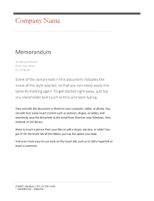

Project Memos

The Project Design Memo Your first memo must consist of the following sections:
a brief description of the language you wish to construct;
a pointer to a Github repo with the specification of the language’s vocabulary, grammar, and scoping rules; and
the choice of implementation milestones.
See figure 1 for a (nonsensical) example. The links for the specification section are suggested readings; they recall how vocabulary, grammar, and scope are explained.
Due Date Send me a PDF version of the memo named design-lastname1-lastname2.pdfzip by Feb 26, 6pm Thursday Mar 1, 9:00am.
To: Matthias Felleisen, boss
From: H. Acker, level 1 indentured servant;
Deve Loper, level 2 indentured servant
Subject: the Control System Language, design summary
The Control System Language (CSL) We wish to build a language for describing certain control systems, dubbed CSL. A CSL programmer will describe control systems in a textual form, with annotations that point to the IEEE Standards Catalog for Control Systems. The language implementation will check these annotations while the programmer composes the program. Running the program will graphical illustrate a simulation of the control system.
We anticipate that, in the near future, CSL programs will provide entry points in the future, so that graphical designers with knowledge of Racket can tailor the graphical presentation. For now, presentations follow basic international standards.
Language Specification The language specification consists of two documents: a description of the language’s vocabulary and grammar and its scoping rules.
Milestones We intend to proceed in three steps:
For the initial systems, we will focus on control systems that exclusively use P elements.
Once we have a complete prototype, we will set up a brief demo to get feedback from our in-house customer representative and management. Time permitting, we will also visit our customer and obtain on-site feedback from domain experts.
Building on the prototype, we will implement the feedback and add D elements to the control system language.
Time permitting, we will add I elements to the language before shipping the product on time and within the proposed budget. (haha)
The Project Implementation Memo
fix the writing (not content) of your project design memo; and
write an implementation memo according to the instructions below.
which of the proposed elements were you able to implement according to your plans;
which elements did you not get to and why; and
which parts of the design posed the most significant implementation problem.
Due Date Send me two PDFs—